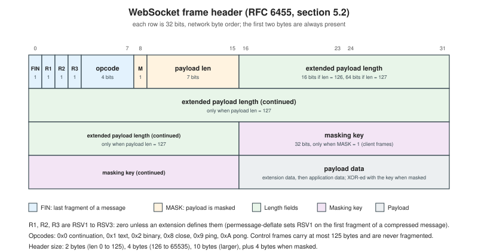

The WebSocket Protocol
|
This content was generated with the assistance of AI and should be verified against the official documentation before being relied on in production. |
The WebSocket protocol turns one HTTP request into a long-lived, full-duplex, message-oriented channel between a client and a server. This page explains it from the bytes up: the HTTP handshake that starts it, the binary frames that carry messages, the masking rule that protects intermediaries, the control frames that keep the channel alive and end it cleanly, and the extension mechanism that adds compression. It is the foundation under every server stack and every browser API described in the rest of this section.
Baseline, checked on 2026-10-24: the protocol is RFC 6455 (December 2011, protocol version 13, Proposed Standard);
compression is RFC 7692 (permessage-deflate); WebSocket over HTTP/2 is RFC 8441 and over HTTP/3 is RFC 9220;
the browser API is the WHATWG WebSockets living standard; the registries live at IANA. The examples run on Node.js
24.21.0 with ws 8.22.0 (the current release of the library) and use no other dependency. All of them were run
for real while writing this page, and the hex dumps below are their actual output.
The running scenario is Chatterbox: browsers connect to wss://chat.example.test/ws, offer the subprotocol
chatterbox.v1, and exchange one JSON envelope per text frame (the envelope is defined in
Message Design and Serialization). The Huddle
videoconference uses the same protocol for signalling, and Pixel Arena uses binary frames for snapshots and inputs.
Where the protocol fits
A WebSocket connection is a TCP connection (usually inside TLS) that starts life as an HTTP/1.1 request, switches
protocol with Upgrade: websocket, and from then on carries frames instead of HTTP messages. Three properties explain
why chat, videoconference signalling and games all use it:
-
Server push without polling. Either side can send at any time, so a chat message, an ICE candidate or a game snapshot arrives as soon as it exists.
-
Message framing on top of a byte stream. TCP delivers bytes. WebSocket delivers whole messages, each tagged text (UTF-8) or binary, so the application does not invent a delimiter.
-
Same infrastructure as the web. It uses ports 80 and 443, the
Originheader, cookies and TLS certificates of the site, so it passes through most firewalls and can be served by the same load balancer.
What it does not give you: ordering across connections, delivery acknowledgements, reconnection, message
types or rooms. TCP gives in-order, reliable delivery on one connection, with the head-of-line blocking that implies for
games (see Networking Fundamentals); everything else is
application protocol, as in Chatterbox. The URL schemes are ws:// (port 80) and wss:// (port 443, TLS); production
traffic always uses wss://.
The opening handshake
The client sends an ordinary HTTP/1.1 GET with a handful of required headers. The server answers 101 Switching
Protocols and, after that blank line, both sides speak frames. This is the exact exchange captured from the raw-socket
client later on this page, against a ws server that allow-lists the origin:
GET /ws HTTP/1.1
Host: 127.0.0.1:8080
Upgrade: websocket
Connection: Upgrade
Sec-WebSocket-Key: IDodcvidpz8SPk/RN34AHQ==
Sec-WebSocket-Version: 13
Origin: https://chat.example.test
Sec-WebSocket-Protocol: chatterbox.v2, chatterbox.v1
Sec-WebSocket-Extensions: permessage-deflate; client_max_window_bitsHTTP/1.1 101 Switching Protocols
Upgrade: websocket
Connection: Upgrade
Sec-WebSocket-Accept: gDlexXiobjOuP68N0pwDwYObskk=
Sec-WebSocket-Protocol: chatterbox.v1
Sec-WebSocket-Extensions: permessage-deflate; server_no_context_takeover; client_no_context_takeover; server_max_window_bits=10The headers have precise roles:
| Header | Sent by | Meaning |
|---|---|---|
|
Both |
Ask for, and confirm, the protocol switch. The request must be a |
|
Client |
16 random bytes, base64 encoded (24 characters). Fresh for every handshake. |
|
Server |
Proof that the server understood the WebSocket handshake (computed below). |
|
Client |
Must be |
|
Browser clients |
The web origin of the page that opened the socket. Browsers always send it. Non-browser clients may omit it. |
|
Client offers a list, server picks one |
Application subprotocols, in preference order. |
|
Client offers, server accepts a subset |
Protocol extensions and their parameters, such as |
The Sec- prefix matters: a page’s JavaScript cannot set any header starting with it, so a cross-origin page cannot
forge a handshake with fetch() or XMLHttpRequest. The browser WebSocket API also cannot add arbitrary headers
such as Authorization, which is why Chatterbox authenticates with a cookie or a one-time ticket and not with a
bearer header (see Authentication and Authorization).
Computing Sec-WebSocket-Accept by hand
The accept value is deliberately simple. Take the client’s Sec-WebSocket-Key text exactly as sent, append the fixed
GUID 258EAFA5-E914-47DA-95CA-C5AB0DC85B11, compute the SHA-1 digest of that string and base64-encode the 20 bytes.
It has no security value against an attacker who can read the traffic. Its job is to make sure that a server (or an
HTTP cache that is not a WebSocket server) that never read the request cannot accidentally produce a valid response,
and that a client cannot be tricked into treating some other HTTP response as a WebSocket handshake.
// Computes Sec-WebSocket-Accept by hand: SHA-1(key + GUID), base64.
import { createHash, randomBytes } from 'node:crypto';
const GUID = '258EAFA5-E914-47DA-95CA-C5AB0DC85B11';
export function acceptFor(key) {
return createHash('sha1').update(key + GUID).digest('base64');
}
export function newKey() {
return randomBytes(16).toString('base64');
}
if (import.meta.url === `file://${process.argv[1]}`) {
const sample = 'dGhlIHNhbXBsZSBub25jZQ==';
const expected = 's3pPLMBiTxaQ9kYGzzhZRbK+xOo=';
const got = acceptFor(sample);
console.log('key :', sample);
console.log('accept :', got);
console.log('matches RFC 6455 section 1.3:', got === expected);
const fresh = newKey();
console.log('fresh key:', fresh, '->', acceptFor(fresh));
}Running node accept.mjs prints:
key : dGhlIHNhbXBsZSBub25jZQ==
accept : s3pPLMBiTxaQ9kYGzzhZRbK+xOo=
matches RFC 6455 section 1.3: true
fresh key: cxkMsZfl+I+qrOvxwzMLXQ== -> +xbzfurQcZTXQtdJAKWT3x5F5OM=The first pair is the sample of RFC 6455, section 1.3, so the function is checked against the standard and not only against itself.
What the client and server must check
The client must fail the connection if the status is not 101, if Upgrade or Connection are missing, if
Sec-WebSocket-Accept is wrong, if the response carries a Sec-WebSocket-Extensions value it did not offer, or if
Sec-WebSocket-Protocol names a subprotocol it did not offer. In a browser, every one of those failures looks the
same to JavaScript: an error event followed by a close event with code 1006 and no reason, because the standard
deliberately hides handshake details from scripts. The reason is in the DevTools Network panel (see
Inspecting WebSocket traffic). A server that does not like the request refuses it with an ordinary HTTP status (400 for a malformed handshake, 401 or 403 for
authentication and origin failures, 426 for a wrong version) before any WebSocket exists.
The versions are simple: 13 is the only one in use, defined by RFC 6455. The older values in the IANA version registry
belong to pre-standard drafts and to the abandoned Hixie protocol. A server that sees another version must answer
426 and list 13.
Handshake and close in one picture
The frame format
After the handshake every message is sent as one or more frames. The header is two bytes for short messages and grows to 14 bytes. The figure shows the layout in 32-bit rows, as RFC 6455 draws it.

The fields, in order:
-
FIN (1 bit) is 1 on the final (or only) frame of a message.
-
RSV1, RSV2, RSV3 (1 bit each) must be 0 unless an extension that was negotiated in the handshake gives them a meaning.
permessage-deflateuses RSV1. A receiver must fail the connection (close 1002) when it sees a reserved bit it did not negotiate. -
opcode (4 bits) tells what the frame carries:
Opcode Name Notes 0x0Continuation
A later fragment of a fragmented text or binary message.
0x1Text
Payload is UTF-8. The complete message must be valid UTF-8, or the receiver closes with 1007.
0x2Binary
Arbitrary bytes. Pixel Arena snapshots use it.
0x8Close
Starts or answers the closing handshake.
0x9Ping
Liveness probe, may carry up to 125 bytes.
0xAPong
Answer to a ping, or a one-way heartbeat.
0x3-0x7,0xB-0xFReserved
Undefined. A receiver that sees one fails the connection.
-
MASK (1 bit) says that a 4-byte masking key follows the length and that the payload is XOR-masked.
-
payload length (7 bits, plus up to 64) is encoded in one of three forms. A value from 0 to 125 is the length itself. The value 126 means that the next 2 bytes (unsigned, big-endian) hold the length, which therefore runs from 126 to 65,535. The value 127 means that the next 8 bytes hold the length (the most significant bit must be 0). A sender must use the shortest form.
-
masking key (32 bits) is present only when MASK is 1.
-
payload data is the application data, preceded by extension data if an extension defines any.
Control frames (opcodes 8 to 10) have two extra rules: the payload length must be 125 or less, so they always use the 7-bit form, and they must not be fragmented.
Hand-decoding frames
The following module encodes and decodes frames exactly as described above. It is the code used by the other examples, and it is short enough to read as documentation of the format:
// Hand-written RFC 6455 frame encoder/decoder (no library).
import { randomBytes } from 'node:crypto';
export const OP = { CONT: 0x0, TEXT: 0x1, BINARY: 0x2, CLOSE: 0x8, PING: 0x9, PONG: 0xa };
export function encodeFrame({ fin = true, rsv = 0, opcode, payload = Buffer.alloc(0), mask = false, maskKey }) {
const len = payload.length;
let ext;
let len7;
if (len < 126) { len7 = len; ext = Buffer.alloc(0); }
else if (len <= 0xffff) { len7 = 126; ext = Buffer.alloc(2); ext.writeUInt16BE(len); }
else { len7 = 127; ext = Buffer.alloc(8); ext.writeBigUInt64BE(BigInt(len)); }
const head = Buffer.alloc(2);
head[0] = (fin ? 0x80 : 0) | ((rsv & 0x7) << 4) | (opcode & 0xf);
head[1] = (mask ? 0x80 : 0) | len7;
if (!mask) return Buffer.concat([head, ext, payload]);
const key = maskKey ?? randomBytes(4);
const masked = Buffer.from(payload);
for (let i = 0; i < masked.length; i++) masked[i] ^= key[i % 4];
return Buffer.concat([head, ext, key, masked]);
}
// Returns { frame, consumed } or null when the buffer holds an incomplete frame.
export function decodeFrame(buf) {
if (buf.length < 2) return null;
const fin = (buf[0] & 0x80) !== 0;
const rsv = (buf[0] >> 4) & 0x7;
const opcode = buf[0] & 0xf;
const masked = (buf[1] & 0x80) !== 0;
let len = buf[1] & 0x7f;
let off = 2;
if (len === 126) {
if (buf.length < 4) return null;
len = buf.readUInt16BE(2); off = 4;
} else if (len === 127) {
if (buf.length < 10) return null;
len = Number(buf.readBigUInt64BE(2)); off = 10;
}
let key;
if (masked) {
if (buf.length < off + 4) return null;
key = buf.subarray(off, off + 4); off += 4;
}
if (buf.length < off + len) return null;
const payload = Buffer.from(buf.subarray(off, off + len));
if (masked) for (let i = 0; i < payload.length; i++) payload[i] ^= key[i % 4];
return { frame: { fin, rsv, opcode, masked, maskKey: key, payload }, consumed: off + len };
}
export function closePayload(code, reason = '') {
const r = Buffer.from(reason, 'utf8');
const b = Buffer.alloc(2 + r.length);
b.writeUInt16BE(code);
r.copy(b, 2);
return b;
}
export const hex = (b) => [...b].map((x) => x.toString(16).padStart(2, '0')).join(' ');The next script opens a socket with fragments.mjs and sends one frame in each length form, then a fragmented message
with a ping in the middle, then an oversized frame. It is written against the ws server shown later on this page,
which has maxPayload set to 16384 bytes, the Chatterbox frame limit.
// Length forms, fragmentation with an interleaved control frame, and the 1009 limit, on a raw socket.
import net from 'node:net';
import { newKey } from './accept.mjs';
import { OP, encodeFrame, decodeFrame, hex } from './frames.mjs';
const sock = net.connect(8080, '127.0.0.1');
let buf = Buffer.alloc(0);
let upgraded = false;
const fixedKey = Buffer.from([0x37, 0xfa, 0x21, 0x3d]); // the masking key used in RFC 6455 section 5.7
const send = (label, o) => {
const f = encodeFrame({ mask: true, maskKey: fixedKey, ...o });
console.log(`>>> ${label}: ${hex(f.subarray(0, 14))}${f.length > 14 ? ' ...' : ''} (${f.length} bytes)`);
sock.write(f);
};
sock.on('connect', () => sock.write([
'GET /ws HTTP/1.1', 'Host: 127.0.0.1:8080', 'Upgrade: websocket', 'Connection: Upgrade',
`Sec-WebSocket-Key: ${newKey()}`, 'Sec-WebSocket-Version: 13',
'Origin: http://localhost:8080', 'Sec-WebSocket-Protocol: chatterbox.v1', '', '',
].join('\r\n')));
// The 64-bit form is only printed, not sent (70000 bytes would hit the same limit).
console.log('64-bit length header for 70000 bytes:', hex(encodeFrame({ opcode: OP.BINARY, payload: Buffer.alloc(70000), mask: true, maskKey: fixedKey }).subarray(0, 14)));
sock.on('data', (chunk) => {
buf = Buffer.concat([buf, chunk]);
if (!upgraded) {
const end = buf.indexOf('\r\n\r\n');
if (end < 0) return;
buf = buf.subarray(end + 4);
upgraded = true;
send('7-bit length (5 bytes)', { opcode: OP.TEXT, payload: Buffer.from('Hello') });
send('16-bit length (300 bytes)', { opcode: OP.TEXT, payload: Buffer.alloc(300, 0x61) });
// One message in three fragments, with a ping between them.
send('fragment 1: TEXT fin=0', { fin: false, opcode: OP.TEXT, payload: Buffer.from('Chatter') });
send('control frame in between: PING', { opcode: OP.PING, payload: Buffer.from('mid') });
send('fragment 2: CONT fin=0', { fin: false, opcode: OP.CONT, payload: Buffer.from('box ') });
send('fragment 3: CONT fin=1', { fin: true, opcode: OP.CONT, payload: Buffer.from('rocks') });
send('16-bit length (20000 bytes > maxPayload 16384)', { opcode: OP.BINARY, payload: Buffer.alloc(20000) });
}
for (;;) {
const r = decodeFrame(buf);
if (!r) break;
buf = buf.subarray(r.consumed);
const f = r.frame;
const name = Object.keys(OP).find((k) => OP[k] === f.opcode);
const code = f.opcode === OP.CLOSE ? ` code=${f.payload.readUInt16BE(0)}` : '';
const text = f.opcode === OP.CLOSE ? '' : ` len=${f.payload.length} ${JSON.stringify(f.payload.toString().slice(0, 24))}`;
console.log(`<<< ${name} fin=${f.fin}${code}${text}`);
}
});
sock.on('close', () => console.log('socket closed'));The output is below, with the bytes of the sent frames annotated. The masking key 37 fa 21 3d is the example key of
RFC 6455, section 5.7, reused only so that the dump is reproducible. Real clients never repeat a key.
64-bit length header for 70000 bytes: 82 ff 00 00 00 00 00 01 11 70 37 fa 21 3d
>>> 7-bit length (5 bytes): 81 85 37 fa 21 3d 7f 9f 4d 51 58 (11 bytes)
>>> 16-bit length (300 bytes): 81 fe 01 2c 37 fa 21 3d 56 9b 40 5c 56 9b ... (308 bytes)
>>> fragment 1: TEXT fin=0: 01 87 37 fa 21 3d 74 92 40 49 43 9f 53 (13 bytes)
>>> control frame in between: PING: 89 83 37 fa 21 3d 5a 93 45 (9 bytes)
>>> fragment 2: CONT fin=0: 00 84 37 fa 21 3d 55 95 59 1d (10 bytes)
>>> fragment 3: CONT fin=1: 80 85 37 fa 21 3d 45 95 42 56 44 (11 bytes)
>>> 16-bit length (20000 bytes > maxPayload 16384): 82 fe 4e 20 37 fa 21 3d 37 fa 21 3d 37 fa ... (20008 bytes)
<<< TEXT fin=true len=5 "Hello"
<<< TEXT fin=true len=300 "aaaaaaaaaaaaaaaaaaaaaaaa"
<<< PONG fin=true len=3 "mid"
<<< TEXT fin=true len=16 "Chatterbox rocks"
<<< CLOSE fin=true code=1009
socket closedReading the first frame byte by byte:
81 1000 0001 FIN=1, RSV=000, opcode=0x1 (text)
85 1000 0101 MASK=1, payload length=5
37 fa 21 3d masking key
7f 9f 4d 51 58 payload XOR key: 48^37=7f ('H'), 65^fa=9f ('e'), 6c^21=4d ('l'), 6c^3d=51 ('l'), 6f^37=58 ('o')The same message from the server is not masked and is seven bytes long: 81 05 48 65 6c 6c 6f. The 300-byte
frame starts 81 fe 01 2c: fe is MASK plus length 126, and 01 2c is 300. The 70000-byte header starts 82 ff and
the 8-byte length 00 00 00 00 00 01 11 70 (0x11170 is 70000). Because the frame header and the payload can be split
across TCP segments arbitrarily, a decoder must buffer until a whole frame is available, which is what the
null return of decodeFrame expresses.
Masking, and why it exists
Every frame sent from a client to a server must be masked with a fresh 32-bit key, and every frame sent from a
server to a client must not be. The payload byte at position i is XOR-ed with byte i mod 4 of the key. Applying the
same operation again restores the original, so the receiver uses the same loop. A server must close the connection
(code 1002) when it receives an unmasked client frame, and a client must do the same for a masked server frame.
The purpose is not confidentiality, because the key travels in the clear next to the data. The purpose is to defeat
cache-poisoning attacks through intermediaries. A malicious page could otherwise open a WebSocket and send bytes that
look like an HTTP request, for example GET /app.js followed by headers, through a transparent proxy that does not
understand the upgrade. The proxy would see what looks like a new request on that connection, fetch the attacker’s
chosen URL and cache the answer under the victim site’s URL. Masking with a key the script cannot choose or predict
means the attacker cannot control the exact bytes on the wire, so it cannot craft such a request. Two consequences:
-
The key must come from a cryptographically strong source and must be unpredictable.
Math.random()is not enough. (The examples usecrypto.randomBytes.) -
Masking is not encryption. Anyone who sees the traffic can unmask it. Use
wss://for confidentiality and integrity.
The cost is a XOR pass over every client payload, which servers do in optimised native code (ws uses an optional
native addon or a vectorised JavaScript fallback). It is one of the reasons client-to-server throughput is slightly
lower than server-to-client throughput.
Fragmentation and message boundaries
A message may be split into several frames. The first frame carries the real opcode (text or binary) with FIN 0, the following frames carry opcode 0 (continuation) with FIN 0, and the last one carries opcode 0 with FIN 1. The rules are:
-
Fragments of different messages must not interleave. There is only one message in flight in each direction.
-
Control frames may be injected between fragments. A ping or a close can arrive in the middle of a long message and must be handled immediately. The
fragments.mjsrun above shows a pong coming back before the message completes. -
Text fragments may split a UTF-8 character. Validation applies to the whole message, so a receiver cannot validate each fragment alone.
-
There is no limit in the protocol on message size, so the application sets one. Without a limit, a client can send fragments forever and exhaust memory.
wsexposesmaxPayload(default 100 MiB, which is far too large for chat); Chatterbox sets 16384 bytes, and an oversized message is answered with close code 1009, as the run above shows.
Fragmentation lets a sender start transmitting a large message before it knows its total length, and lets a
multiplexing sender interleave control frames. It rarely matters to application code, because libraries reassemble
messages before delivering them, but it explains why browsers expose message events with whole messages and why
bufferedAmount counts bytes rather than messages. Browser-side details are in
The Browser WebSocket API.
Ping, pong and keepalive
A ping (opcode 9) may carry up to 125 bytes of application data. The receiver must answer with a pong (opcode 10) that
carries the same data, as soon as practical, unless it has already received a close frame. An unsolicited pong is
allowed and is ignored, which makes it a one-way heartbeat. Browsers answer pings automatically and expose no API to
send them, which is why Chatterbox sends an application-level presence heartbeat as well as a server-initiated
protocol ping every heartbeatMs.
Protocol ping/pong has two uses. It keeps NAT mappings and load-balancer idle timers alive (the AWS Application Load Balancer closes idle connections after 60 seconds by default, so pings must be more frequent than that), and it detects half-open connections: if no pong arrives within a deadline, the server terminates the socket. Intervals, deadlines and reconnection are covered in Connection Lifecycle, Heartbeats and Reconnection.
The closing handshake and close codes
Closing is a two-step protocol, separate from closing TCP. An endpoint that wants to close sends a close frame (opcode 8). Its optional payload is a 2-byte status code (big-endian) followed by a UTF-8 reason, 123 bytes at most because the whole control payload is limited to 125. The peer answers with its own close frame, usually echoing the code. After an endpoint has sent a close frame it sends no more data frames, and after it has received one it discards anything that follows. When both close frames have been exchanged, the server closes the TCP connection first, and the client waits for that. A client that does not see the server close TCP within a reasonable time closes it itself, so a peer that never answers cannot hold the connection open forever.
The raw-socket client below ends its session exactly like this: it sends a masked close frame whose payload is
03 e8 62 79 65 (03 e8 is 1000 and 62 79 65 is the reason bye), and the server answers with the unmasked
88 05 03 e8 62 79 65.
The close-code table
Codes are 16-bit numbers. The ranges are defined by RFC 6455 and the IANA registry:
| Code | Name | Meaning and typical use |
|---|---|---|
1000 |
Normal Closure |
The purpose of the connection is fulfilled. The only code a client library uses by default. |
1001 |
Going Away |
A server is shutting down, or a browser tab navigates away. |
1002 |
Protocol Error |
A frame violated the protocol: unmasked client frame, unknown opcode, reserved bit set. |
1003 |
Unsupported Data |
Received a type of data the endpoint cannot accept, such as binary on a text-only endpoint. |
1004 |
Reserved |
Reserved for future use. |
1005 |
No Status Rcvd |
Reserved. Never sent on the wire. A library reports it when the peer’s close frame had no code. |
1006 |
Abnormal Closure |
Reserved. Never sent on the wire. A library reports it when TCP closed without a close frame, or the handshake failed. |
1007 |
Invalid Payload Data |
A text message was not valid UTF-8. |
1008 |
Policy Violation |
Generic code for a policy breach when no other code fits. |
1009 |
Message Too Big |
A message exceeded what the endpoint can process ( |
1010 |
Mandatory Extension |
A client expected an extension the server did not negotiate. |
1011 |
Internal Error |
The server hit an unexpected condition. |
1012 |
Service Restart |
The server is restarting. Registered later at IANA. |
1013 |
Try Again Later |
Overloaded or temporarily unavailable. Registered later at IANA. |
1014 |
Bad Gateway |
A gateway or proxy got an invalid answer from upstream. Registered later at IANA. |
1015 |
TLS Handshake |
Reserved. Never sent on the wire. Reports a failed TLS handshake. |
1016-2999 |
Unassigned |
Reserved for the protocol, its extensions and future revisions. |
3000-3999 |
Registered libraries and frameworks |
First-come registry at IANA, for example 3000 Unauthorized, 3003 Forbidden, 3008 Timeout. |
4000-4999 |
Private use |
Free for applications. Chatterbox defines 4400, 4401, 4403, 4408, 4413, 4426, 4429 and 4503. |
Two rules matter in browsers. First, WebSocket.close(code, reason) accepts only 1000 or a code from 3000 to 4999 and
throws an InvalidAccessError for anything else, so a page can never send 1001, 1008 or 1011. (A browser may itself send
1001 when a tab unloads, or 1002 and 1007 for protocol errors it detects.) Second, 1005, 1006 and 1015 are for local
reporting only: a close frame carrying them is a protocol violation. An application that wants a distinct, actionable
code for a client (unauthorized, rate limited, upgrade required) uses the 4000 range, as Chatterbox does: 4401 tells
the client to fetch a new ticket, 4429 to back off, and 4503 to reconnect immediately with jitter. The reason text is
free-form and must never contain secrets, because it is visible in DevTools and logs.
Subprotocols
Sec-WebSocket-Protocol negotiates the application protocol spoken in the frames. The client lists tokens in
preference order, the server picks exactly one and echoes it, and the browser exposes it as socket.protocol. If the
server does not support any of them it simply omits the header, and the connection is open with an empty protocol (a
server that insists on a subprotocol should refuse the handshake instead). If the server picks a token the client did
not offer, the client must fail the connection.
Chatterbox uses the token chatterbox.v1; a future incompatible envelope would be chatterbox.v2, and a client can offer both,
newest first, to migrate without breaking old servers. The token is a name, not a URL, and it should be unique:
IANA keeps a Subprotocol Name Registry (for example xmpp, the subprotocol of RFC 7395 described in
XMPP in the Browser; mqtt; graphql-transport-ws). Registration is optional, but
reusing a registered token for a different protocol is a bug waiting for an interoperability problem. Because the header is the only
custom value a browser lets a script choose, some applications smuggle a token in it; it is a hack with real
drawbacks (the value appears in logs and must be a valid token), compared in
Authentication and Authorization.
Extensions
Sec-WebSocket-Extensions negotiates protocol-level changes: the client offers one or more extensions with parameters,
and the server answers with the subset it accepts, with the final parameter values. Extensions claim the RSV bits and
may add extension data before the payload. They apply in the order listed. The IANA Extension Name Registry holds
permessage-deflate (RFC 7692), the one extension in practice. (x-webkit-deflate-frame and deflate-frame, earlier
drafts of per-frame compression, were obsolete long ago.)
permessage-deflate (RFC 7692)
The extension compresses each message with raw DEFLATE (RFC 1951) and marks the first frame of a compressed message
with RSV1. The sender runs DEFLATE with a Z_SYNC_FLUSH at the end of the message and removes the four trailing
bytes 00 00 ff ff; the receiver appends them again before inflating. Four parameters tune it:
| Parameter | Offered by | Meaning |
|---|---|---|
|
Client or server |
The server resets its compression window after each message. Without it the server keeps one window for the whole connection, so later messages compress against earlier ones. |
|
Client or server |
The same for the client’s compressor. |
|
Client or server (N from 8 to 15) |
Limits the server’s LZ77 window to 2 to the power N bytes (15 means 32 KiB). |
|
Client (bare form) or server (with value) |
Limits the client’s window. A client offers the bare parameter to say it can accept a limit, and the server answers with a value or omits it. |
The server may accept an offer, accept it with smaller limits, or ignore the extension (the connection then works,
uncompressed). The handshake at the top of this page shows a client offering client_max_window_bits and a server
answering with server_no_context_takeover, client_no_context_takeover and server_max_window_bits=10, which its
perMessageDeflate options requested. Compression is per message, and a sender may leave any message uncompressed by
leaving RSV1 clear. The ws option threshold (1024 bytes by default) sets the size below which messages are not compressed when context takeover is disabled.
The next script shows the effect of context takeover on identical Chatterbox envelopes, and then negotiates the extension with the real server (which must be running; see the next section):
// permessage-deflate by hand (RFC 7692 section 7): raw DEFLATE, SYNC_FLUSH, strip the 00 00 ff ff tail.
import zlib from 'node:zlib';
import WebSocket from 'ws';
const TAIL = Buffer.from([0x00, 0x00, 0xff, 0xff]);
const msg = (n) => Buffer.from(JSON.stringify({ v: 1, type: 'message', id: `01JAB3W7Q8Z4N5R6T7V8X9Y0Z${n}`, room: 'general', ts: 0,
payload: { text: 'Hello, Chatterbox! Anyone up for lunch?', replyTo: null, attachments: [] } }));
function compress(stream, data) {
return new Promise((resolve) => {
const chunks = [];
stream.on('data', (c) => chunks.push(c));
stream.write(data);
stream.flush(zlib.constants.Z_SYNC_FLUSH, () => {
const out = Buffer.concat(chunks);
resolve(out.subarray(out.length - 4).equals(TAIL) ? out.subarray(0, out.length - 4) : out);
});
});
}
// context takeover: one deflate stream for the whole connection
const shared = zlib.createDeflateRaw();
// no_context_takeover: a fresh stream per message
for (const n of ['A', 'B', 'C']) {
const data = msg(n);
const a = await compress(shared, data);
const b = await compress(zlib.createDeflateRaw(), data);
console.log(`message ${n}: plain=${data.length} with takeover=${a.length} no takeover=${b.length}`);
}
// Confirm the negotiation with a real client (server.mjs must be running).
const ws = new WebSocket('ws://127.0.0.1:8080/ws', ['chatterbox.v2', 'chatterbox.v1'], {
origin: 'https://chat.example.test',
perMessageDeflate: { clientMaxWindowBits: 10 },
});
ws.on('open', () => {
console.log('subprotocol :', ws.protocol);
console.log('extensions :', ws.extensions);
ws.close(1000);
});
ws.on('error', (e) => console.log('error', e.message));message A: plain=175 with takeover=155 no takeover=155
message B: plain=175 with takeover=10 no takeover=155
message C: plain=175 with takeover=9 no takeover=155
subprotocol : chatterbox.v1
extensions : permessage-deflateWith takeover, the second envelope is 10 bytes instead of 155 because the window still holds the first one. That is the
benefit of context takeover for chatty protocols with repetitive JSON. It is also the root of both costs below. (The
extensions line prints only the extension name because the ws client reports the extension name, not the
negotiated parameters.)
Memory cost per connection
Context takeover keeps compressor and decompressor state alive for as long as the connection lives. The zlib manual gives
the deflate memory use as (1 << (windowBits + 2)) + (1 << (memLevel + 9)) + 6 KB, which is about 268 KB at the
defaults (windowBits 15, memLevel 8), plus an inflate window of 1 << windowBits bytes (32 KB) in the other direction. A server
holding 50,000 compressed connections with takeover could spend more than ten gigabytes on compression state alone at
those defaults, before any application data. Besides memory, the ws documentation warns that zlib allocation patterns under load can cause memory
fragmentation and slow performance in Node.js, which is why the extension is off by default on the ws server and
on by default on its client. The remedies are the ones in the server example below: both no_context_takeover flags,
serverMaxWindowBits of 10 (which roughly halves the deflate state), a threshold so small frames are not compressed at
all, a lower zlibDeflateOptions.level, and a concurrencyLimit. Chatterbox’s envelopes are small and bursty, so the
compression ratio gained from larger windows rarely pays for the memory; Pixel Arena sends binary snapshots with its own
delta encoding and disables the extension.
The compression-oracle caveat
Compression leaks length. If a message mixes a secret with text an attacker controls, then guessing the secret one
character at a time is possible: a correct guess makes the compressed message shorter, and an observer of the encrypted
traffic sees the length. This is the idea behind the CRIME attack on TLS compression and the BREACH attack on HTTP
response compression, and it applies to permessage-deflate for the same reason, especially with context takeover,
where messages sent earlier (containing the secret) are part of the window against which later attacker-influenced
messages are compressed. Rules that follow:
-
Never put a secret (session ticket, CSRF token, API key) in the same compression context as attacker-controlled text. Do not echo a secret back inside a message that reflects user input.
-
Prefer
no_context_takeover(also saving memory) and turn the extension off on endpoints that carry secrets next to user-chosen data. A Chatterboxhellocarrying a ticket is the kind of message to send uncompressed. -
Authenticate with a cookie or a ticket in the handshake, not repeatedly in messages.
-
Treat random padding of lengths as a mitigation that costs bandwidth, not as a fix.
WebSocket over HTTP/2 and HTTP/3
The Upgrade mechanism exists only in HTTP/1.1, so WebSocket cannot reuse an HTTP/2 or HTTP/3 connection through it.
Two RFCs bootstrap WebSocket over a single stream of a multiplexed connection, so that a page’s WebSockets and
requests share one TCP or QUIC connection:
-
RFC 8441 (September 2018), "Bootstrapping WebSockets with HTTP/2", defines the extended CONNECT method. A server advertises support by sending the HTTP/2 setting
SETTINGS_ENABLE_CONNECT_PROTOCOL(identifier0x08) with value 1. A client may then send aCONNECTrequest that also has a:protocolpseudo-header, herewebsocket. -
RFC 9220 (June 2022), "Bootstrapping WebSockets with HTTP/3", applies the same mechanism to HTTP/3, with the setting
SETTINGS_ENABLE_CONNECT_PROTOCOL(also0x08) in the HTTP/3SETTINGSframe.
The request replaces the HTTP/1.1 handshake. There is no Upgrade, no Sec-WebSocket-Key and no
Sec-WebSocket-Accept, because the stream itself identifies the exchange. Sec-WebSocket-Version,
Sec-WebSocket-Protocol and Sec-WebSocket-Extensions keep their meaning, and Origin is still sent by browsers:
:method = CONNECT
:protocol = websocket
:scheme = https
:path = /ws
:authority = chat.example.test
sec-websocket-version = 13
sec-websocket-protocol = chatterbox.v1
origin = https://chat.example.testA successful answer is a 200 status (not 101), after which the stream’s data carries ordinary WebSocket frames
(masked in client frames as always). A client must not send an extended CONNECT before it has seen the setting from the
server, and a server that receives an unknown :protocol answers 501 Not Implemented. Closing the WebSocket ends the stream (a
FIN on the stream, or a stream reset when the connection is aborted) instead of closing the connection.
Why it matters: with HTTP/1.1, each WebSocket needs its own TCP connection, which strains browsers' per-host
connection limits and proxies; over HTTP/2 or HTTP/3 many sockets and requests share one connection, and over HTTP/3 a lost
packet in one stream no longer stalls the others (though one WebSocket is still an ordered stream). Support belongs to
the stack, not to the JavaScript API: the page still calls new WebSocket(url), and the browser chooses the transport. A server
or proxy has to support it explicitly (for Node.js, node:http2 can enable the setting through its
enableConnectProtocol option and then handle the CONNECT stream itself, while ws itself speaks HTTP/1.1), and
many deployments terminate HTTP/2 at the proxy and talk HTTP/1.1 upstream, which keeps application servers unchanged.
For new, low-latency designs the alternative is
WebTransport and Media over QUIC. Proxy specifics are
in Proxies, Load Balancers and Deployment.
The IANA registries
IANA maintains the "WebSocket Protocol Registries": the WebSocket Extension Name Registry, the Subprotocol Name Registry, the Version Number Registry, the Close Code Number Registry, the Opcode Registry and the Framing Header Bits Registry. Close codes 1000-2999 need standards action or specification review, 3000-3999 are first-come-first-served and 4000-4999 are not registered, and RFC 7936 clarified the registration procedures of the subprotocol registry. Before inventing a subprotocol token or a close code in the 3000 range, look at the registry. The page of the registry is the authoritative list of the codes in the table above.
A server that checks Origin and negotiates
A minimal, complete ws server for Chatterbox. It rejects any handshake whose Origin is not on the allow-list,
selects chatterbox.v1, configures permessage-deflate conservatively, sets maxPayload, answers pings, and
echoes messages. It does the origin check in the HTTP upgrade event, before the WebSocket handshake is completed,
so a rejected client gets a plain 403 and never owns a socket.
{
"name": "chatterbox-wire-lab",
"private": true,
"type": "module",
"dependencies": {
"ws": "8.22.0"
}
}// Chatterbox endpoint: Origin allow-list, subprotocol negotiation, permessage-deflate options.
import http from 'node:http';
import { WebSocketServer } from 'ws';
const ALLOWED_ORIGINS = new Set(['https://chat.example.test', 'http://localhost:8080']);
const PORT = Number(process.env.PORT ?? 8080);
const wss = new WebSocketServer({
noServer: true,
maxPayload: 16384, // Chatterbox maximum frame: bigger closes with 1009
// Pick chatterbox.v1 if the client offered it; returning false accepts no subprotocol.
handleProtocols: (offered) => (offered.has('chatterbox.v1') ? 'chatterbox.v1' : false),
perMessageDeflate: {
serverNoContextTakeover: true, // drop the LZ77 window after every message
clientNoContextTakeover: true,
serverMaxWindowBits: 10, // 1 KiB window instead of 32 KiB
threshold: 256, // do not compress small frames
zlibDeflateOptions: { level: 3 },
concurrencyLimit: 4,
},
});
wss.on('connection', (ws, req) => {
console.log('connected: protocol=%s extensions=%s origin=%s',
ws.protocol, ws.extensions, req.headers.origin);
ws.on('message', (data, isBinary) => {
console.log('message (%s, %d bytes)', isBinary ? 'binary' : 'text', data.length);
ws.send(data, { binary: isBinary });
if (!isBinary && data.toString() === 'ping-me') ws.ping(Buffer.from('hb'));
});
ws.on('error', (err) => console.log('socket error: %s', err.code ?? err.message)); // without this, a 1009 crashes the process
ws.on('close', (code, reason) => console.log('closed: %d %s', code, reason.toString()));
});
const server = http.createServer((req, res) => { res.writeHead(426).end('Upgrade Required'); });
server.on('upgrade', (req, socket, head) => {
const origin = req.headers.origin;
if (!origin || !ALLOWED_ORIGINS.has(origin)) {
// Refuse before the handshake completes: a plain HTTP 403, no WebSocket is created.
socket.write('HTTP/1.1 403 Forbidden\r\nConnection: close\r\nContent-Length: 0\r\n\r\n');
socket.destroy();
console.log('rejected origin: %s', origin);
return;
}
wss.handleUpgrade(req, socket, head, (ws) => wss.emit('connection', ws, req));
});
server.listen(PORT, () => console.log('listening on :%d', PORT));A client on raw sockets
The last example is a WebSocket client with no WebSocket library: it opens a TCP connection with node:net, performs the
handshake, verifies Sec-WebSocket-Accept with the function from the start of this page, sends a masked text frame,
decodes the server’s unmasked frames, answers a server ping with a pong that echoes the payload, and closes with code
1000. It offers chatterbox.v2, chatterbox.v1 and permessage-deflate, and (because it never sets RSV1) sends
uncompressed frames, which is always allowed.
// A WebSocket client written on top of node:net only: handshake, masked frames, ping/pong, close.
import net from 'node:net';
import { acceptFor, newKey } from './accept.mjs';
import { OP, encodeFrame, decodeFrame, closePayload, hex } from './frames.mjs';
const host = process.argv[2] ?? '127.0.0.1';
const port = Number(process.argv[3] ?? 8080);
const origin = process.argv[4] ?? 'https://chat.example.test';
const key = newKey();
const sock = net.connect(port, host);
let buf = Buffer.alloc(0);
let upgraded = false;
sock.on('connect', () => {
const req = [
'GET /ws HTTP/1.1',
`Host: ${host}:${port}`,
'Upgrade: websocket',
'Connection: Upgrade',
`Sec-WebSocket-Key: ${key}`,
'Sec-WebSocket-Version: 13',
`Origin: ${origin}`,
'Sec-WebSocket-Protocol: chatterbox.v2, chatterbox.v1',
'Sec-WebSocket-Extensions: permessage-deflate; client_max_window_bits',
'', '',
].join('\r\n');
console.log('>>> request\n' + req);
sock.write(req);
});
function send(label, opts) {
const f = encodeFrame({ mask: true, ...opts });
console.log(`>>> ${label}: ${hex(f.subarray(0, 16))}${f.length > 16 ? ' ...' : ''} (${f.length} bytes)`);
sock.write(f);
}
sock.on('data', (chunk) => {
buf = Buffer.concat([buf, chunk]);
if (!upgraded) {
const end = buf.indexOf('\r\n\r\n');
if (end < 0) return;
const head = buf.subarray(0, end).toString('latin1');
buf = buf.subarray(end + 4);
console.log('<<< response\n' + head + '\n');
if (!head.startsWith('HTTP/1.1 101')) { sock.destroy(); return; }
const accept = /^sec-websocket-accept:\s*(.+)$/im.exec(head)?.[1]?.trim();
if (accept !== acceptFor(key)) throw new Error('bad Sec-WebSocket-Accept');
console.log('Sec-WebSocket-Accept verified');
upgraded = true;
// Frames below stay uncompressed (RSV1 = 0); permessage-deflate is optional for the sender.
const hello = JSON.stringify({ v: 1, type: 'hello', id: '01JAB3W7Q8Z4N5R6T7V8X9Y0ZA', room: null, ts: 0, payload: { client: 'raw/1.0' } });
send('hello (masked text)', { opcode: OP.TEXT, payload: Buffer.from(hello) });
send('ping-me (masked text)', { opcode: OP.TEXT, payload: Buffer.from('ping-me') });
}
for (;;) {
const r = decodeFrame(buf);
if (!r) break;
buf = buf.subarray(r.consumed);
const { frame } = r;
const name = Object.keys(OP).find((k) => OP[k] === frame.opcode);
const shown = name === 'CLOSE' ? hex(frame.payload) : JSON.stringify(frame.payload.toString());
console.log(`<<< ${name} fin=${frame.fin} masked=${frame.masked} len=${frame.payload.length} payload=${shown}`);
if (frame.opcode === OP.PING) {
send('pong (echo of ping payload)', { opcode: OP.PONG, payload: frame.payload });
setTimeout(() => send('close 1000 (masked)', { opcode: OP.CLOSE, payload: closePayload(1000, 'bye') }), 50);
}
}
});
sock.on('close', () => console.log('socket closed'));Start the server with node server.mjs, then run node raw-client.mjs. The output, with annotations (the dump shows the
request and the response already listed in the handshake section):
Sec-WebSocket-Accept verified
>>> hello (masked text): 81 ea d2 0f 64 5c a9 2d 12 7e e8 3e 48 7e a6 76 ... (112 bytes)
>>> ping-me (masked text): 81 87 e9 08 cd 0f 99 61 a3 68 c4 65 a8 (13 bytes)
<<< TEXT fin=true masked=false len=106 payload="{\"v\":1,\"type\":\"hello\",...}"
<<< TEXT fin=true masked=false len=7 payload="ping-me"
<<< PING fin=true masked=false len=2 payload="hb"
>>> pong (echo of ping payload): 8a 82 c1 b3 fe 61 a9 d1 (8 bytes)
>>> close 1000 (masked): 88 85 88 31 6a 6e 8b d9 08 17 ed (11 bytes)
<<< CLOSE fin=true masked=false len=5 payload=03 e8 62 79 65
socket closedThe frames, byte by byte:
8a 82 c1 b3 fe 61 a9 d1 pong: FIN=1 opcode=0xA, MASK=1 length=2, key c1 b3 fe 61,
payload a9 d1 XOR key = 68 62 -> "hb", the same data as the ping
88 85 88 31 6a 6e 8b d9 08 17 ed
close: FIN=1 opcode=0x8, MASK=1 length=5, key 88 31 6a 6e,
payload 8b d9 08 17 ed XOR key = 03 e8 62 79 65 -> code 1000, reason "bye"
88 05 03 e8 62 79 65 the server's reply: unmasked close, code 1000, reason "bye"
89 02 68 62 the server's ping: opcode 0x9, length 2, "hb" (no mask)When the same client is run with Origin: https://evil.example, the server never completes the handshake:
HTTP/1.1 403 Forbidden
Connection: close
Content-Length: 0Security
The protocol’s security rests on a few decisions, and each is the application’s to make.
Cross-Site WebSocket Hijacking. Browsers do not apply the same-origin policy to WebSocket handshakes: a page on any
site may open wss://chat.example.test/ws, and the browser attaches the site’s cookies to the request. If the server
authenticates the handshake by cookie alone and does not look at Origin, any web page the victim visits can open a
socket as the victim, read the replies (a WebSocket, unlike a fetch() to another origin, has no CORS check on
reading) and send commands. That is Cross-Site WebSocket Hijacking, the WebSocket variant of cross-site request forgery.
The protocol’s own defence is the Origin header, which the browser sets and a page cannot change, so the server
must allow-list Origin (as the example above does), refuse anything unexpected with 403, and decide explicitly what
to do with requests that have no Origin (non-browser clients). It is the equivalent of the CORS checks described in
What is CORS? with the difference that CORS is enforced by the browser while for WebSockets the server
is the only enforcer. SameSite=Lax or Strict cookies reduce the exposure, but WebSocket handshakes from the same
site (different origin) and older browsers still need the Origin check. A one-time ticket in the URL or in the first
message (instead of an ambient cookie) removes ambient authority altogether; the trade-offs of each option are in
Authentication and Authorization and
Security.
Other rules: use wss:// always (otherwise masking is the only protection and a proxy can read and alter everything);
set maxPayload; validate JSON after parsing and never trust the ts or from fields of a client (Chatterbox ignores
them); rate-limit per connection; time out connections that never complete hello; and keep close reasons free of
internal details.
Inspecting WebSocket traffic
Browser DevTools. In Chrome, open the Network panel, toggle the WS filter, click the connection and open the
Messages tab to see the text and binary messages in each direction with their time; the Headers tab shows the
handshake request and the 101 response (or the failing status of a refused handshake), which is where a 403 from the
origin check or a 400 from a proxy shows up. Firefox has the same filter and a Messages pane. The panels show decoded
messages and not raw frames, so masking keys, fragments and RSV bits are not visible, and control frames such as ping and pong
are typically not listed as messages. DevTools also throttles WebSocket connections together with other network traffic, which is useful
for testing slow links.
Wireshark. Capture the loopback or network interface and filter websocket. The dissector shows each frame with
websocket.fin, websocket.opcode, websocket.mask, websocket.masking_key, websocket.payload_length and
the unmasked payload (websocket.payload.text), and it reassembles fragmented messages. Useful filters are
websocket.opcode == 9 || websocket.opcode == 10 for ping and pong, websocket.opcode == 8 for closes (the status
code is websocket.payload.close.status_code) and http.upgrade for the handshake requests. Wireshark cannot
read the frames inside wss:// unless you give it the TLS secrets: start the browser with the SSLKEYLOGFILE
environment variable set to a file, then point Wireshark’s TLS preferences to the "(Pre)-Master-Secret log filename".
For permessage-deflate traffic Wireshark can inflate messages when the context-takeover parameters allow it (the
websocket.decompression.failed.expert field flags failures). Use unencrypted ws:// on localhost for the examples of this page and
capture the loopback interface.
Common errors and pitfalls
-
A 1006 close with no reason in the browser. The handshake failed (wrong status, missing
Upgradein a proxy, failedAccept, origin refused, TLS error) or the TCP connection dropped without a close frame. Look at the Network panel and the server log; the page cannot see the cause. -
The proxy strips
UpgradeandConnection. They are hop-by-hop headers and must be forwarded explicitly by the reverse proxy, together with a long read timeout. Symptom: the server sees a plain GET, answers 200 or 400, and the client sees a failed handshake. -
The server process crashes on a bad client. In
ws, a connection that emits anerror(a frame overmaxPayload, invalid UTF-8, a protocol violation) throws if noerrorlistener is attached. Theserver.mjsabove has one for exactly that reason; the first version of the example crashed on the 1009 test. -
Unmasked or masked-on-the-wrong-side frames. A hand-written client that forgets masking is closed with 1002.
-
Opcode handling. Treating a binary frame as text, or a continuation frame as a new message, corrupts the stream. Always accumulate fragments until FIN.
-
Close code misuse. Sending 1005, 1006 or 1015 in a close frame, or calling
close(1001)from a browser, is an error. Use 1000 and 3000-4999. -
Mixing secrets with compression. See the compression-oracle caveat.
-
Unlimited message size. Leave
maxPayloadat its default, and one message can use 100 MiB of memory. -
A reason longer than 123 bytes. Browsers throw a
SyntaxError, other libraries truncate or fail.
Version and specification history
-
2009-2010: HyBi drafts and Hixie. Early WebSocket drafts (Hixie-75 and Hixie-76) used a different handshake and no masking, and were found vulnerable to proxy cache poisoning, which led to masking and the key/accept exchange.
-
December 2011: RFC 6455. Version 13, still the only version in use. RFC 7936 later clarified the registry procedures.
-
December 2015: RFC 7692.
permessage-deflate. -
September 2018: RFC 8441. WebSocket over HTTP/2 with extended CONNECT.
-
June 2022: RFC 9220. The same for HTTP/3.
-
Browsers. The WHATWG WebSockets standard defines the
WebSocketAPI on top of RFC 6455.WebSocketStream, with backpressure, ships only in Chromium 124 and later and is not on a standards track, as the browser API page explains. Node.js has a browser-compatible globalWebSocketclient (stable since v22.4.0) but no server.
Related pages
-
Networking Fundamentals for TCP, TLS and HTTP underneath.
-
The Browser WebSocket API for the client half.
-
Message Design and Serialization for the Chatterbox envelope.
-
Choosing a WebSocket Stack for libraries that implement this protocol.
-
Security and Observability.